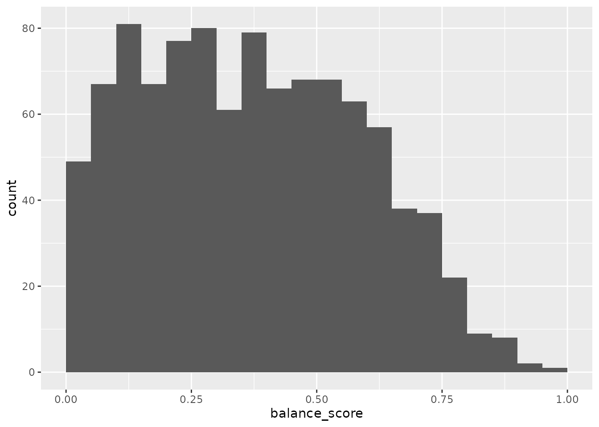

methods_for_sample_allocation_to_batches
methods_for_sample_allocation_to_batches.RmdIntroduction
Especially as the costs of performing assays has decreased, there has been a move from analysing few samples from carefully controlled experiments to analysing samples directly from patient population of interest. Controlled experiments are performed in experimental model systems in order that covariates can be held constant across all experimental units, whereas in clinical samples there will commonly be number of covariates that also impact upon the dependent variable of interest. Performing assays on a large number of samples requires that the be analysed in batches, which results in technical variation that should be accounted for in the analysis. Here we demonstrate a tool to allocate pre-selectedsamples to these technical batches in a way that maximises the balance of specified covariates. By maximising our ability to estimate the effects of the batch and the specified covaraites, this facilitates best estimation of the effect of the dependent variable of interest.
Generate some simulated data with covarirates
First, we generate some simulated data with covariates. We will generate 98 samples with 3 covariates, and then allocate these samples to batches of 13.
toy_data = simulate_data(n_samples = 98, block_size = 2)
head(toy_data)
#> sample_id covariate1 covariate2 covariate3 block_id
#> 1 Sample1 0.2875775 -0.08336907 C block_1
#> 2 Sample2 0.7883051 0.25331851 B block_1
#> 3 Sample3 0.4089769 -0.02854676 B block_2
#> 4 Sample4 0.8830174 -0.04287046 B block_2
#> 5 Sample5 0.9404673 1.36860228 C block_3
#> 6 Sample6 0.0455565 -0.22577099 A block_3Randomisation
A common approach reported in the analysis of clinical samples is to simply randomise samples to different batches. Randomisation is frequently used in clinical trials to ensure that the treatment groups are balanced with respect to known and unknown covariates. In this circumstance, covariates for all patients are not known at the time when treatments are allocated and so is our best chance to ensure that the treatment groups are balanced with respect to these covariates. In statistical terms, there is no bias: the expectation of the value of any given covariates would be equal for both a control and a treatment group: i.e. that if we repeated the experiment many times, the average value of the covariate would be the same for both groups.
We can simply generate a single random layout of our toy dataset of 98 samples to a batch size of 13 as follows:
single_layout = allocate_samples(toy_data,
batch_size = 13,
covariates = c("covariate1", "covariate2", "covariate3"),
method = "random",
blocking_variable = NA)
#> No blocking variable specified.
#> Covariate: covariate1 - continuous
#> Covariate: covariate2 - continuous
#> Covariate: covariate3 - categorical
#> Number of samples: 98
#> Joining with `by = join_by(covariate1, covariate2, covariate3,
#> sample_id)`
head(single_layout)
#> $layout
#> covariate1 covariate2 covariate3 sample_id batch_allocation block_id
#> 1 0.2875775201 -0.083369066 C Sample1 7 block_1
#> 2 0.7883051354 0.253318514 B Sample2 7 block_1
#> 3 0.4089769218 -0.028546755 B Sample3 3 block_2
#> 4 0.8830174040 -0.042870457 B Sample4 6 block_2
#> 5 0.9404672843 1.368602284 C Sample5 3 block_3
#> 6 0.0455564994 -0.225770986 A Sample6 2 block_3
#> 7 0.5281054880 1.516470604 B Sample7 2 block_4
#> 8 0.8924190444 -1.548752804 B Sample8 3 block_4
#> 9 0.5514350145 0.584613750 A Sample9 5 block_5
#> 10 0.4566147353 0.123854244 B Sample10 1 block_5
#> 11 0.9568333453 0.215941569 A Sample11 2 block_6
#> 12 0.4533341562 0.379639483 A Sample12 3 block_6
#> 13 0.6775706355 -0.502323453 B Sample13 5 block_7
#> 14 0.5726334020 -0.333207384 C Sample14 5 block_7
#> 15 0.1029246827 -1.018575383 A Sample15 1 block_8
#> 16 0.8998249704 -1.071791226 C Sample16 1 block_8
#> 17 0.2460877344 0.303528641 A Sample17 8 block_9
#> 18 0.0420595335 0.448209779 B Sample18 2 block_9
#> 19 0.3279207193 0.053004227 A Sample19 7 block_10
#> 20 0.9545036491 0.922267468 B Sample20 3 block_10
#> 21 0.8895393161 2.050084686 B Sample21 1 block_11
#> 22 0.6928034062 -0.491031166 B Sample22 3 block_11
#> 23 0.6405068138 -2.309168876 C Sample23 4 block_12
#> 24 0.9942697766 1.005738524 A Sample24 6 block_12
#> 25 0.6557057991 -0.709200763 A Sample25 1 block_13
#> 26 0.7085304682 -0.688008616 A Sample26 4 block_13
#> 27 0.5440660247 1.025571370 A Sample27 7 block_14
#> 28 0.5941420204 -0.284773007 C Sample28 8 block_14
#> 29 0.2891597373 -1.220717712 A Sample29 6 block_15
#> 30 0.1471136473 0.181303480 B Sample30 4 block_15
#> 31 0.9630242325 -0.138891362 A Sample31 1 block_16
#> 32 0.9022990451 0.005764186 B Sample32 7 block_16
#> 33 0.6907052784 0.385280401 B Sample33 3 block_17
#> 34 0.7954674177 -0.370660032 A Sample34 4 block_17
#> 35 0.0246136845 0.644376549 A Sample35 5 block_18
#> 36 0.4777959711 -0.220486562 A Sample36 7 block_18
#> 37 0.7584595375 0.331781964 A Sample37 6 block_19
#> 38 0.2164079358 1.096839013 C Sample38 8 block_19
#> 39 0.3181810076 0.435181491 A Sample39 6 block_20
#> 40 0.2316257854 -0.325931586 A Sample40 2 block_20
#> 41 0.1428000224 1.148807618 A Sample41 5 block_21
#> 42 0.4145463358 0.993503856 B Sample42 5 block_21
#> 43 0.4137243263 0.548396960 B Sample43 8 block_22
#> 44 0.3688454509 0.238731735 C Sample44 4 block_22
#> 45 0.1524447477 -0.627906076 B Sample45 5 block_23
#> 46 0.1388060634 1.360652449 C Sample46 2 block_23
#> 47 0.2330340995 -0.600259587 A Sample47 1 block_24
#> 48 0.4659624503 2.187332993 A Sample48 6 block_24
#> 49 0.2659726404 1.532610626 A Sample49 4 block_25
#> 50 0.8578277153 -0.235700359 A Sample50 7 block_25
#> 51 0.0458311667 -1.026420900 A Sample51 2 block_26
#> 52 0.4422000742 -0.710406564 C Sample52 5 block_26
#> 53 0.7989248456 0.256883709 A Sample53 1 block_27
#> 54 0.1218992600 -0.246691878 A Sample54 2 block_27
#> 55 0.5609479838 -0.347542599 C Sample55 7 block_28
#> 56 0.2065313896 -0.951618567 C Sample56 7 block_28
#> 57 0.1275316502 -0.045027725 B Sample57 8 block_29
#> 58 0.7533078643 -0.784904469 A Sample58 8 block_29
#> 59 0.8950453592 -1.667941937 A Sample59 6 block_30
#> 60 0.3744627759 -0.380226520 A Sample60 6 block_30
#> 61 0.6651151946 0.918996609 B Sample61 8 block_31
#> 62 0.0948406609 -0.575346963 A Sample62 6 block_31
#> 63 0.3839696378 0.607964322 B Sample63 6 block_32
#> 64 0.2743836446 -1.617882708 A Sample64 5 block_32
#> 65 0.8146400389 -0.055561966 A Sample65 7 block_33
#> 66 0.4485163414 0.519407204 C Sample66 8 block_33
#> 67 0.8100643530 0.301153362 C Sample67 1 block_34
#> 68 0.8123895095 0.105676194 B Sample68 1 block_34
#> 69 0.7943423211 -0.640706008 B Sample69 4 block_35
#> 70 0.4398316876 -0.849704346 A Sample70 7 block_35
#> 71 0.7544751586 -1.024128791 C Sample71 7 block_36
#> 72 0.6292211316 0.117646597 A Sample72 7 block_36
#> 73 0.7101824014 -0.947474614 A Sample73 4 block_37
#> 74 0.0006247733 -0.490557444 B Sample74 6 block_37
#> 75 0.4753165741 -0.256092192 A Sample75 2 block_38
#> 76 0.2201188852 1.843862005 B Sample76 8 block_38
#> 77 0.3798165377 -0.651949902 B Sample77 6 block_39
#> 78 0.6127710033 0.235386572 B Sample78 1 block_39
#> 79 0.3517979092 0.077960850 B Sample79 3 block_40
#> 80 0.1111354243 -0.961856634 C Sample80 4 block_40
#> 81 0.2436194727 -0.071308086 C Sample81 2 block_41
#> 82 0.6680555874 1.444550858 C Sample82 5 block_41
#> 83 0.4176467797 0.451504053 C Sample83 8 block_42
#> 84 0.7881958340 0.041232922 A Sample84 1 block_42
#> 85 0.1028646443 -0.422496832 C Sample85 8 block_43
#> 86 0.4348927415 -2.053247222 C Sample86 4 block_43
#> 87 0.9849569800 1.131337213 C Sample87 4 block_44
#> 88 0.8930511144 -1.460640071 B Sample88 4 block_44
#> 89 0.8864690608 0.739947511 C Sample89 5 block_45
#> 90 0.1750526503 1.909103569 C Sample90 8 block_45
#> 91 0.1306956916 -1.443893161 C Sample91 4 block_46
#> 92 0.6531019250 0.701784335 A Sample92 3 block_46
#> 93 0.3435164723 -0.262197489 A Sample93 2 block_47
#> 94 0.6567581280 -1.572144159 C Sample94 2 block_47
#> 95 0.3203732425 -1.514667654 B Sample95 8 block_48
#> 96 0.1876911193 -1.601536174 C Sample96 3 block_48
#> 97 0.7822943013 -0.530906522 B Sample97 3 block_49
#> 98 0.0935949867 -1.461755585 A Sample98 5 block_49
#> 99 NA NA <NA> padding1 2 <NA>
#> 100 NA NA <NA> padding2 3 <NA>
#> 101 NA NA <NA> padding3 5 <NA>
#> 102 NA NA <NA> padding4 1 <NA>
#> 103 NA NA <NA> padding5 6 <NA>
#> 104 NA NA <NA> padding6 3 <NA>
#>
#> $results
#> # A tibble: 3 × 2
#> covariate p_value
#> <chr> <dbl>
#> 1 covariate1 0.0175
#> 2 covariate2 0.484
#> 3 covariate3 0.0820The function allocate_samples returns a list with the
layout of samples to batches in the layout slot and the
probability that a covaraite does not differ between the batches
(appropriate for continuous or categorical variables depending upon the
input data type) in the results slot.
We can assess the balance of the layout across all of our specified covariates by calculating the joint probability that all of them do not differ between the batches. Since probabilities are multiplicative, we calcluate this simply at the product of the individual probabilities that each covariate does not differ between the batches.
prod(single_layout[['results']]$p_value)
#> [1] 0.0006938787Here we can see that the joint probability that all of the covariates do not differ between the batches is low, despite the fact that the layout was generated randomly.
In order to get an overview of how good a single random layout is, we
can generate a large number of random layouts and examine the
distribution of the joint probability that all of the covariates do not
differ between the batches. As can be seen in the documentation, the
allocate_samples() function inculdes a random seed for
reproducibility, and so here we explicitly set a series of different
random seeds.
random_seeds <- sample(1:10000, 1000, replace = FALSE)
results_list <- lapply(random_seeds, function(seed) {
allocate_samples(toy_data,
batch_size = 13,
covariates = c("covariate1", "covariate2", "covariate3"),
method = "random",
blocking_variable = NA,
seed = seed)
})
# plot histrogram for a single covariate: covariate1
probability_covariate1 <- lapply(seq_along(results_list), function(i) {
data.frame(
iteration_number = i,
p_value = results_list[[i]][['results']] %>%
filter(covariate == "covariate1") %>%
pull(p_value)
)
})
plot_data_covariate1 <- do.call(rbind, probability_covariate1)
# plot histrogram of probability that covariate1 does not differ between the batches
plot_data_covariate1 %>%
ggplot(aes(x = p_value)) +
geom_histogram(binwidth = 0.01) As expected, we observe a uniform distribution for a single varaible -
but note that are still many layouts with a low probability that the
covariate does not differ between the batches.
As expected, we observe a uniform distribution for a single varaible -
but note that are still many layouts with a low probability that the
covariate does not differ between the batches.

The “brute force” approach to allocating samples to batches would
simply then select the best layout from these random layouts. This is
implemented in the allocate_samples function using the
method = "best_random" argument for demonstration purposes
(though note that due to the use of different random seeds, this layout
may differ from that generated above). Here, we generate 1000 random
layouts and then select the one with the best balance of the
covariates.
best_random_layout = allocate_samples(toy_data,
batch_size = 13,
covariates = c("covariate1", "covariate2", "covariate3"),
iterations = 1000,
method = "best_random")
#> No blocking variable specified.
#> Covariate: covariate1 - continuous
#> Covariate: covariate2 - continuous
#> Covariate: covariate3 - categorical
#> Number of samples: 98
#> Joint probability that the best layout is balanced: 0.7795554
#> Joining with `by = join_by(covariate1, covariate2, covariate3,
#> sample_id)`
head(best_random_layout)
#> $layout
#> covariate1 covariate2 covariate3 sample_id batch_allocation block_id
#> 1 0.2875775201 -0.083369066 C Sample1 2 block_1
#> 2 0.7883051354 0.253318514 B Sample2 5 block_1
#> 3 0.4089769218 -0.028546755 B Sample3 7 block_2
#> 4 0.8830174040 -0.042870457 B Sample4 3 block_2
#> 5 0.9404672843 1.368602284 C Sample5 3 block_3
#> 6 0.0455564994 -0.225770986 A Sample6 5 block_3
#> 7 0.5281054880 1.516470604 B Sample7 2 block_4
#> 8 0.8924190444 -1.548752804 B Sample8 6 block_4
#> 9 0.5514350145 0.584613750 A Sample9 6 block_5
#> 10 0.4566147353 0.123854244 B Sample10 2 block_5
#> 11 0.9568333453 0.215941569 A Sample11 8 block_6
#> 12 0.4533341562 0.379639483 A Sample12 5 block_6
#> 13 0.6775706355 -0.502323453 B Sample13 3 block_7
#> 14 0.5726334020 -0.333207384 C Sample14 3 block_7
#> 15 0.1029246827 -1.018575383 A Sample15 6 block_8
#> 16 0.8998249704 -1.071791226 C Sample16 5 block_8
#> 17 0.2460877344 0.303528641 A Sample17 6 block_9
#> 18 0.0420595335 0.448209779 B Sample18 4 block_9
#> 19 0.3279207193 0.053004227 A Sample19 3 block_10
#> 20 0.9545036491 0.922267468 B Sample20 5 block_10
#> 21 0.8895393161 2.050084686 B Sample21 4 block_11
#> 22 0.6928034062 -0.491031166 B Sample22 5 block_11
#> 23 0.6405068138 -2.309168876 C Sample23 7 block_12
#> 24 0.9942697766 1.005738524 A Sample24 7 block_12
#> 25 0.6557057991 -0.709200763 A Sample25 1 block_13
#> 26 0.7085304682 -0.688008616 A Sample26 4 block_13
#> 27 0.5440660247 1.025571370 A Sample27 1 block_14
#> 28 0.5941420204 -0.284773007 C Sample28 1 block_14
#> 29 0.2891597373 -1.220717712 A Sample29 2 block_15
#> 30 0.1471136473 0.181303480 B Sample30 1 block_15
#> 31 0.9630242325 -0.138891362 A Sample31 1 block_16
#> 32 0.9022990451 0.005764186 B Sample32 5 block_16
#> 33 0.6907052784 0.385280401 B Sample33 4 block_17
#> 34 0.7954674177 -0.370660032 A Sample34 2 block_17
#> 35 0.0246136845 0.644376549 A Sample35 2 block_18
#> 36 0.4777959711 -0.220486562 A Sample36 1 block_18
#> 37 0.7584595375 0.331781964 A Sample37 7 block_19
#> 38 0.2164079358 1.096839013 C Sample38 3 block_19
#> 39 0.3181810076 0.435181491 A Sample39 4 block_20
#> 40 0.2316257854 -0.325931586 A Sample40 8 block_20
#> 41 0.1428000224 1.148807618 A Sample41 5 block_21
#> 42 0.4145463358 0.993503856 B Sample42 1 block_21
#> 43 0.4137243263 0.548396960 B Sample43 8 block_22
#> 44 0.3688454509 0.238731735 C Sample44 4 block_22
#> 45 0.1524447477 -0.627906076 B Sample45 4 block_23
#> 46 0.1388060634 1.360652449 C Sample46 5 block_23
#> 47 0.2330340995 -0.600259587 A Sample47 3 block_24
#> 48 0.4659624503 2.187332993 A Sample48 8 block_24
#> 49 0.2659726404 1.532610626 A Sample49 1 block_25
#> 50 0.8578277153 -0.235700359 A Sample50 1 block_25
#> 51 0.0458311667 -1.026420900 A Sample51 4 block_26
#> 52 0.4422000742 -0.710406564 C Sample52 5 block_26
#> 53 0.7989248456 0.256883709 A Sample53 8 block_27
#> 54 0.1218992600 -0.246691878 A Sample54 5 block_27
#> 55 0.5609479838 -0.347542599 C Sample55 6 block_28
#> 56 0.2065313896 -0.951618567 C Sample56 5 block_28
#> 57 0.1275316502 -0.045027725 B Sample57 3 block_29
#> 58 0.7533078643 -0.784904469 A Sample58 7 block_29
#> 59 0.8950453592 -1.667941937 A Sample59 2 block_30
#> 60 0.3744627759 -0.380226520 A Sample60 7 block_30
#> 61 0.6651151946 0.918996609 B Sample61 3 block_31
#> 62 0.0948406609 -0.575346963 A Sample62 1 block_31
#> 63 0.3839696378 0.607964322 B Sample63 2 block_32
#> 64 0.2743836446 -1.617882708 A Sample64 4 block_32
#> 65 0.8146400389 -0.055561966 A Sample65 3 block_33
#> 66 0.4485163414 0.519407204 C Sample66 7 block_33
#> 67 0.8100643530 0.301153362 C Sample67 7 block_34
#> 68 0.8123895095 0.105676194 B Sample68 3 block_34
#> 69 0.7943423211 -0.640706008 B Sample69 4 block_35
#> 70 0.4398316876 -0.849704346 A Sample70 6 block_35
#> 71 0.7544751586 -1.024128791 C Sample71 4 block_36
#> 72 0.6292211316 0.117646597 A Sample72 2 block_36
#> 73 0.7101824014 -0.947474614 A Sample73 4 block_37
#> 74 0.0006247733 -0.490557444 B Sample74 6 block_37
#> 75 0.4753165741 -0.256092192 A Sample75 8 block_38
#> 76 0.2201188852 1.843862005 B Sample76 8 block_38
#> 77 0.3798165377 -0.651949902 B Sample77 8 block_39
#> 78 0.6127710033 0.235386572 B Sample78 6 block_39
#> 79 0.3517979092 0.077960850 B Sample79 7 block_40
#> 80 0.1111354243 -0.961856634 C Sample80 6 block_40
#> 81 0.2436194727 -0.071308086 C Sample81 8 block_41
#> 82 0.6680555874 1.444550858 C Sample82 8 block_41
#> 83 0.4176467797 0.451504053 C Sample83 5 block_42
#> 84 0.7881958340 0.041232922 A Sample84 2 block_42
#> 85 0.1028646443 -0.422496832 C Sample85 1 block_43
#> 86 0.4348927415 -2.053247222 C Sample86 1 block_43
#> 87 0.9849569800 1.131337213 C Sample87 4 block_44
#> 88 0.8930511144 -1.460640071 B Sample88 8 block_44
#> 89 0.8864690608 0.739947511 C Sample89 6 block_45
#> 90 0.1750526503 1.909103569 C Sample90 7 block_45
#> 91 0.1306956916 -1.443893161 C Sample91 2 block_46
#> 92 0.6531019250 0.701784335 A Sample92 7 block_46
#> 93 0.3435164723 -0.262197489 A Sample93 1 block_47
#> 94 0.6567581280 -1.572144159 C Sample94 8 block_47
#> 95 0.3203732425 -1.514667654 B Sample95 6 block_48
#> 96 0.1876911193 -1.601536174 C Sample96 8 block_48
#> 97 0.7822943013 -0.530906522 B Sample97 3 block_49
#> 98 0.0935949867 -1.461755585 A Sample98 3 block_49
#> 99 NA NA <NA> padding1 6 <NA>
#> 100 NA NA <NA> padding2 2 <NA>
#> 101 NA NA <NA> padding3 7 <NA>
#> 102 NA NA <NA> padding4 2 <NA>
#> 103 NA NA <NA> padding5 6 <NA>
#> 104 NA NA <NA> padding6 7 <NA>
#>
#> $results
#> # A tibble: 3 × 2
#> covariate p_value
#> <chr> <dbl>
#> 1 covariate1 0.945
#> 2 covariate2 0.868
#> 3 covariate3 0.951Again, the balance of the layout across all of our specified covariates is assessed calculating the joint probability that all of them do not differ between the batches. We can see that the best random layout is clearly a superior layout to the common practice of performing a single randomisation as we did above.
prod(best_random_layout[['results']]$p_value)
#> [1] 0.7795554Optimisation methods from machine learning
Even with the processing capabilities of modern desktop computers, brute force approaches are problematic since the number of possible combinations quickly explodes.
Since exhaustive search is clearly impractical, we therefore we
exploit machine learning optimisation approaches in order to maximise
the balance of the batches that are generated. Specifically we utilise a
simulated annealing algorithm, which is a heuristic optimisation method
that can efficiently approximate the global optimum of a large search
space. Interested readers are directed towards the general introduction
from wikipedia [wikipedia_2023a], but in practice the method is
implemented as the default method using to allocate samples to different
batches (but can be explicitly specified using the argument
method = "simulated_annealing").
optimal_layout = allocate_samples(toy_data,
batch_size = 13,
covariates = c("covariate1", "covariate2", "covariate3"),
iterations = 300,
plot_convergence = TRUE)
#> No blocking variable specified.
#> Covariate: covariate1 - continuous
#> Covariate: covariate2 - continuous
#> Covariate: covariate3 - categorical
#> Number of samples: 98#> Joint probability that the final layout is balanced: 0.9970577
#> Joining with `by = join_by(covariate1, covariate2, covariate3,
#> sample_id)`For clarity, we return a plot to make it easy for the user to confirm that the simulated annealing algorithm has been run with a sufficient number of iterations to converge, seen by the ???saturation of the joint probability.
Accordingly, we also achieve a more balanced configuration than that of the best random layout and within a samller number of iterations.
prod(optimal_layout[['results']]$p_value)
#> [1] 0.9960607We can also compare the run time of the simulated annealing algorithm to that of the best random layout.
# rerun best_random_layout to calculate run time
runtime_brute_force <- system.time({
best_random_layout <- allocate_samples(toy_data,
batch_size = 13,
covariates = c("covariate1", "covariate2", "covariate3"),
iterations = 1000,
method = "best_random")
})
#> No blocking variable specified.
#> Covariate: covariate1 - continuous
#> Covariate: covariate2 - continuous
#> Covariate: covariate3 - categorical
#> Number of samples: 98
#> Joint probability that the best layout is balanced: 0.7795554
#> Joining with `by = join_by(covariate1, covariate2, covariate3,
#> sample_id)`
# rerun optimal_layout to calculate run time
runtime_optimal <- system.time({
optimal_layout <- allocate_samples(toy_data,
batch_size = 13,
covariates = c("covariate1", "covariate2", "covariate3"),
#plot_convergence = FALSE,
iterations = 300)
})
#> No blocking variable specified.
#> Covariate: covariate1 - continuous
#> Covariate: covariate2 - continuous
#> Covariate: covariate3 - categorical
#> Number of samples: 98
#> Joint probability that the final layout is balanced: 0.9970577
#> Joining with `by = join_by(covariate1, covariate2, covariate3,
#> sample_id)`
# plot run times
data.frame(method = c("brute_force", "simulated_annealing"),
time = c(runtime_brute_force, runtime_optimal)) %>%
ggplot(aes(x = method, y = time, fill = method)) +
geom_col()In addition to generating a more balanced layout, we see that the machine learning approach also achieves this in less run time.
Blocking
There is a adage on the design of experiments, commonly attributed to George Box, to “block what you can, randomise what you cannot”. We have discussed the limitations of randomisation in situations where the covariates for all samples are already known in advance. However, the advice to block variables is still relevant, and we also implement functionality to block samples within batches by a specified variable. This can be performed as follows:
optimal_layout_blocked = allocate_samples(toy_data,
batch_size = 13,
covariates = c("covariate1", "covariate2", "covariate3"),
blocking_variable = "block_id",
iterations = 1000,
method = "simulated_annealing")
#> Blocking variable: block_id
#> Covariate: covariate1 - continuous
#> Covariate: covariate2 - continuous
#> Covariate: covariate3 - categorical
#> Number of samples: 98
#> Joint probability that the final layout is balanced: 0.999972
#> Joining with `by = join_by(covariate1, covariate2, covariate3, block_id,
#> sample_id)`plot an overview of the layout
In order to easily get an overview of the balance of a particular layout, we provide a simple function to plot the levels of covariates across the batches.
plot_layout(optimal_layout_blocked, covariates = c("covariate1", "covariate2", "covariate3"))
#> Warning: Removed 12 rows containing missing values or values outside the scale range
#> (`geom_point()`).
session info
sessionInfo()
#> R version 4.4.1 (2024-06-14)
#> Platform: x86_64-pc-linux-gnu
#> Running under: Ubuntu 22.04.5 LTS
#>
#> Matrix products: default
#> BLAS: /usr/lib/x86_64-linux-gnu/openblas-pthread/libblas.so.3
#> LAPACK: /usr/lib/x86_64-linux-gnu/openblas-pthread/libopenblasp-r0.3.20.so; LAPACK version 3.10.0
#>
#> locale:
#> [1] LC_CTYPE=C.UTF-8 LC_NUMERIC=C LC_TIME=C.UTF-8
#> [4] LC_COLLATE=C.UTF-8 LC_MONETARY=C.UTF-8 LC_MESSAGES=C.UTF-8
#> [7] LC_PAPER=C.UTF-8 LC_NAME=C LC_ADDRESS=C
#> [10] LC_TELEPHONE=C LC_MEASUREMENT=C.UTF-8 LC_IDENTIFICATION=C
#>
#> time zone: UTC
#> tzcode source: system (glibc)
#>
#> attached base packages:
#> [1] stats graphics grDevices utils datasets methods base
#>
#> other attached packages:
#> [1] ggplot2_3.5.1 dplyr_1.1.4
#> [3] SampleAllocateR_0.0.0.9000
#>
#> loaded via a namespace (and not attached):
#> [1] gtable_0.3.6 jsonlite_1.8.9 highr_0.11 compiler_4.4.1
#> [5] tidyselect_1.2.1 tidyr_1.3.1 jquerylib_0.1.4 systemfonts_1.1.0
#> [9] scales_1.3.0 textshaping_0.4.0 yaml_2.3.10 fastmap_1.2.0
#> [13] R6_2.5.1 labeling_0.4.3 generics_0.1.3 knitr_1.48
#> [17] tibble_3.2.1 desc_1.4.3 munsell_0.5.1 bslib_0.8.0
#> [21] pillar_1.9.0 rlang_1.1.4 utf8_1.2.4 cachem_1.1.0
#> [25] xfun_0.48 fs_1.6.4 sass_0.4.9 cli_3.6.3
#> [29] withr_3.0.2 pkgdown_2.1.1 magrittr_2.0.3 digest_0.6.37
#> [33] grid_4.4.1 lifecycle_1.0.4 vctrs_0.6.5 evaluate_1.0.1
#> [37] glue_1.8.0 farver_2.1.2 ragg_1.3.3 fansi_1.0.6
#> [41] colorspace_2.1-1 purrr_1.0.2 rmarkdown_2.28 tools_4.4.1
#> [45] pkgconfig_2.0.3 htmltools_0.5.8.1